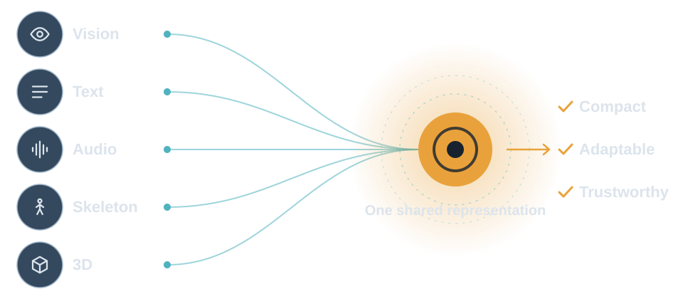

Research project · Universitat de Barcelona
Efficient Models of Multimodal Representations
E-MORE studies how to build multimodal AI models that are compact, adaptable and trustworthy, so that they can learn from and reason about vision, language, audio and more without prohibitive computational cost.
About the projectResearch lines
What E-MORE is about
Efficient
Smaller, cheaper models that keep their performance.
Adaptable
Quick specialization to new tasks and modalities.
Structured
Representations that capture hierarchy and meaning.
Trustworthy
Privacy, unlearning and auditability by design.
At a glance
- Project
- PID2025-170489NB-I00
- Host
- Universitat de Barcelona
- Duration
- 3 years, from September 2026
- Funded by
- MICIU / AEI
Explore
Research
The scientific lines that E-MORE pursues, from efficient adaptation to trustworthy AI.
Read more about the research lines